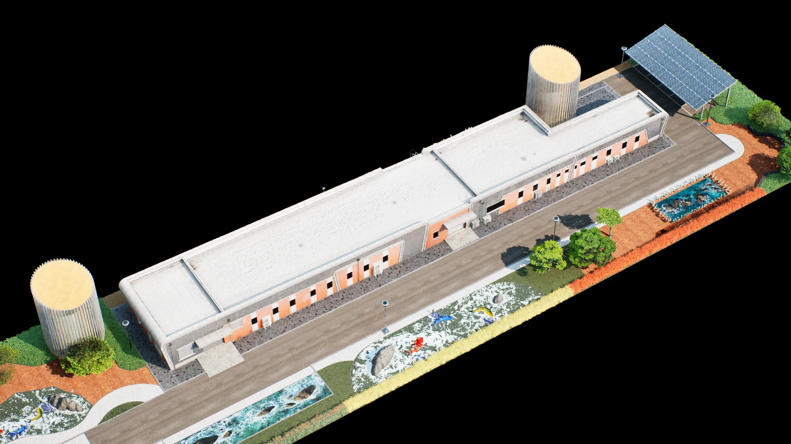
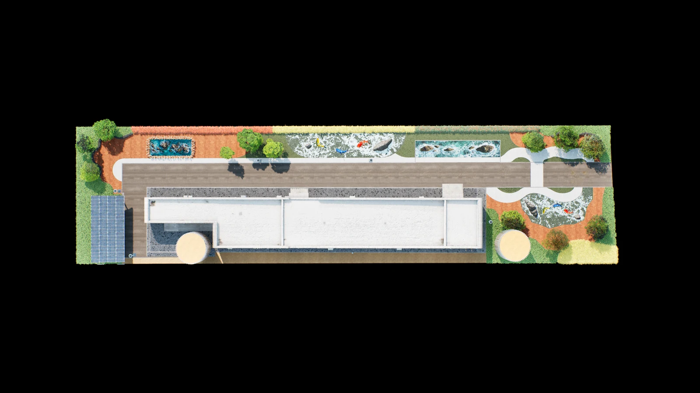
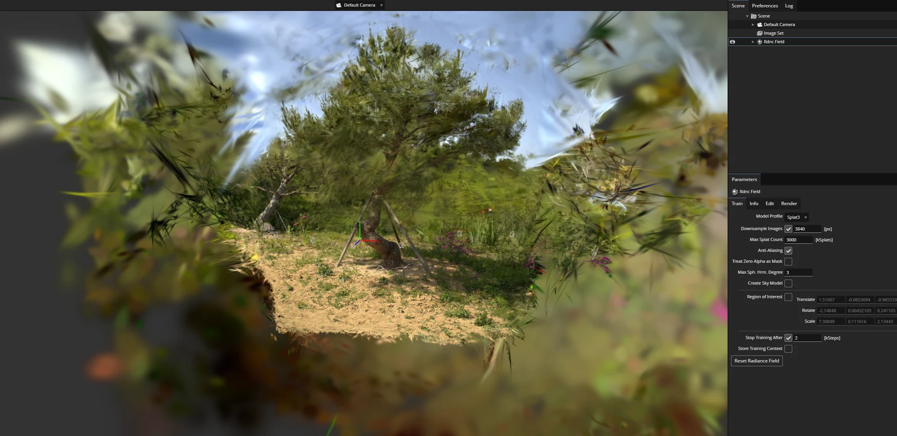
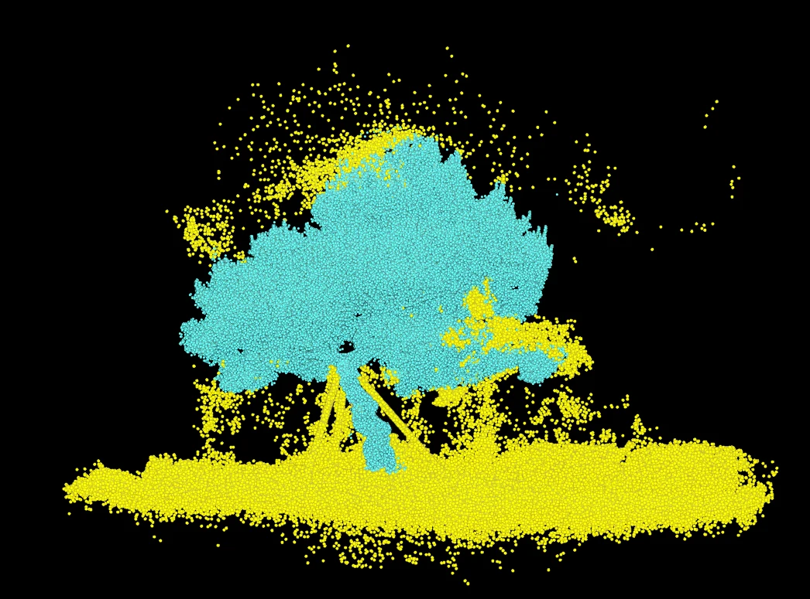
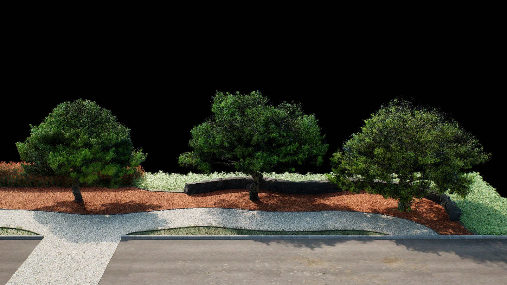
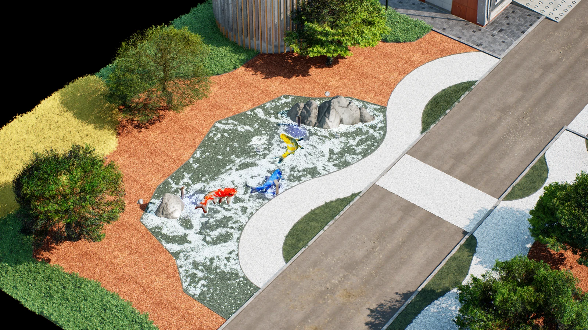
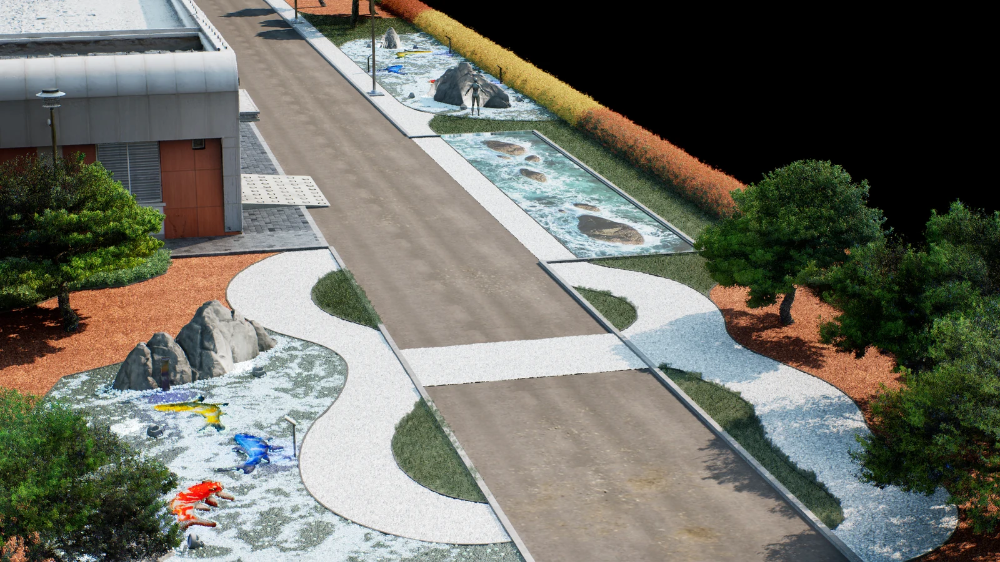

한국도로공사 프로젝트
2025년 한국도로공사 동탄터널관리동의 조경 구성을 위해 Unreal Engine 환경을 제작했다. 전달받은 전개도를 바탕으로 건물과 조경의 베이스 레이아웃을 만들고 여러 차례 수정하며 환경을 제작하였다.
실제로 선정된 소나무를 사용해야 했기 때문에 촬영한 소스를 3DGS로 복원해 적용했다. 나머지 식생은 SpeedTree로 제작하거나 구매했고 돌은 전달받은 레퍼런스에 맞춰 모델링한 뒤 PCG로 배치했다.
1. 현장 확인과 베이스 레이아웃
작업에 들어가기 전 건물은 이미 지어져 있는 상태였다. 팀에서 현장에 방문해 건물을 스캔하고 실제 규격을 확인했다.
확인한 건물을 기준으로 베이스 레이아웃을 만들고 전달받은 전개도에 맞춰 조경 환경을 제작하였다. 작업 중에는 여러 차례 수정을 거쳤다.




2. 실제 소나무 촬영
조경에 들어갈 소나무는 실제로 골라주신 나무와 똑같이 만들어야 했다. 주어진 시간 안에 나무를 하나씩 모델링하기에는 무리가 있어 실제 나무를 촬영하고 3DGS로 복원하는 방식으로 작업했다.
아래 사진은 촬영 대상 소나무 중 두 그루와 촬영 현장이다.


3. 3DGS 복원과 Unreal Engine 적용
PostShot 복원
촬영한 사진을 PostShot에 불러와 3DGS로 만들고 PLY 파일로 내보냈다.


Houdini 포인트 정리
PLY 파일을 Houdini에 불러와 소나무 주변의 불필요한 포인트를 정리했다.


Unreal Engine 적용
정리한 데이터를 다시 PostShot에 불러와 Unreal Engine에 사용할 형태로 내보내고 환경에 배치했다.


4. 식생 제작과 돌 배치
소나무 외의 식생은 SpeedTree로 직접 제작하거나 구매한 에셋을 사용했다.
바닥에 사용할 돌도 실제 레퍼런스를 전달받아 같은 형태로 모델링하였다. 제작한 돌은 PCG를 사용해 배치했으며 Spline으로 배치할 범위를 지정했다.


제작 결과
전달받은 전개도를 바탕으로 건물과 조경 환경을 구성하고 실제 소나무를 복원한 3DGS와 제작·구매한 식생, 레퍼런스에 맞춰 만든 돌을 함께 배치하였다.


2026 · 이목 졸음쉼터
이목 졸음쉼터 디지털트윈 제작에 참여하였다.